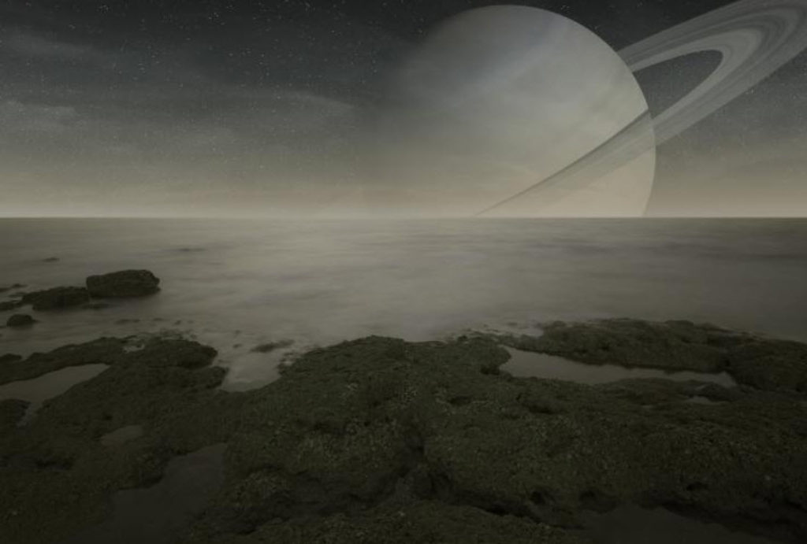
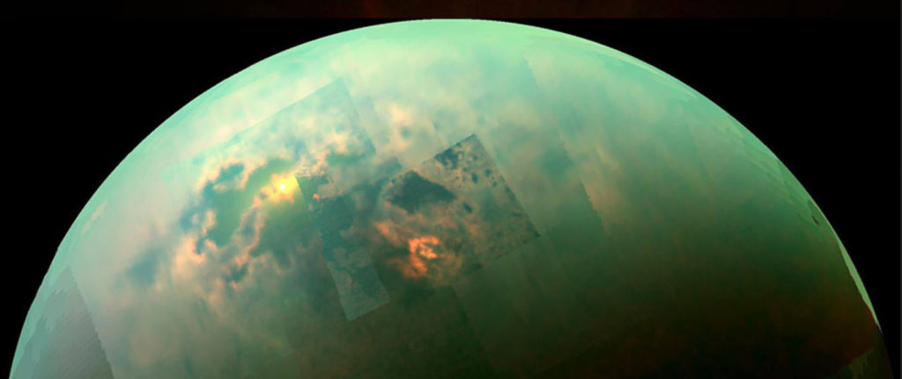
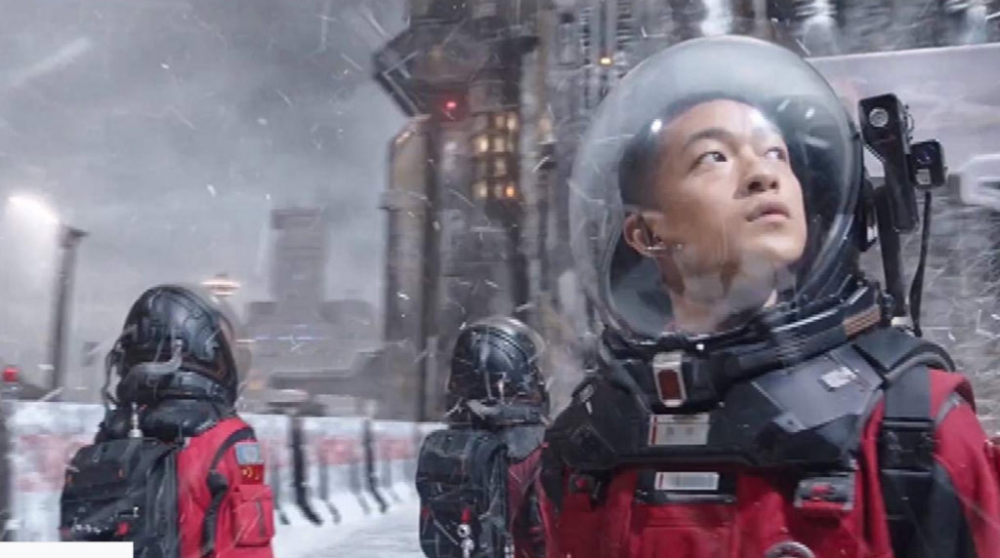
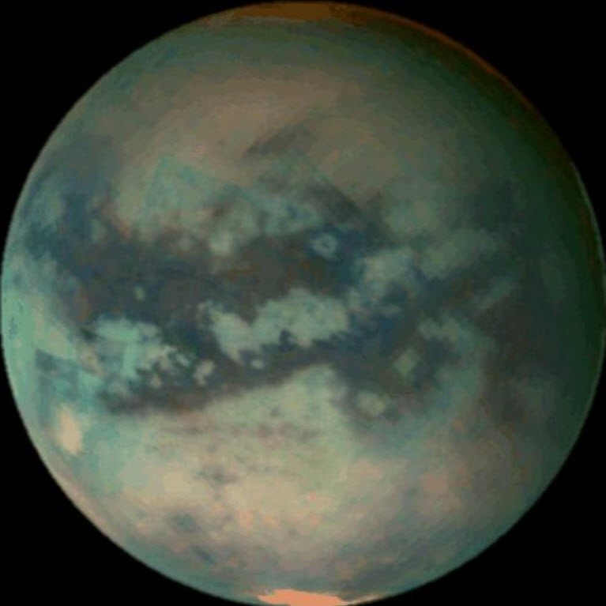
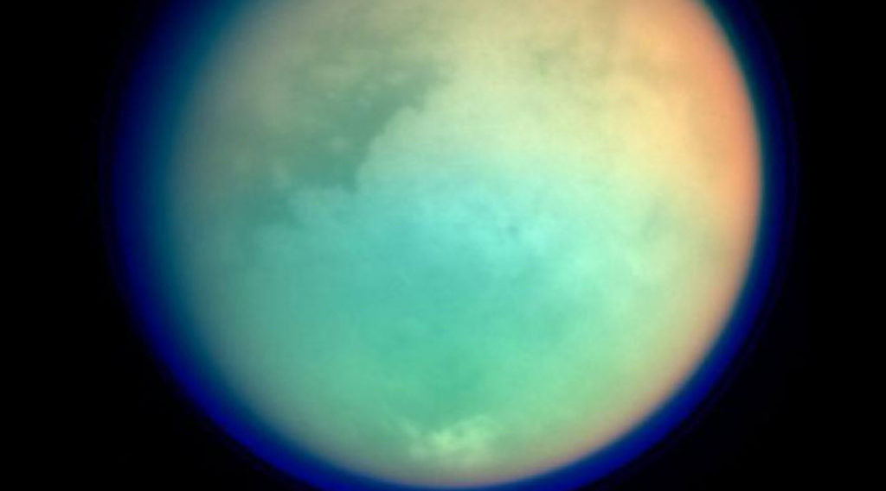
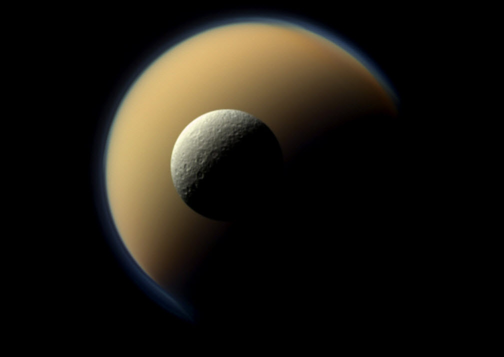
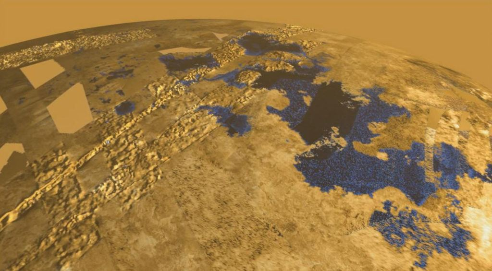
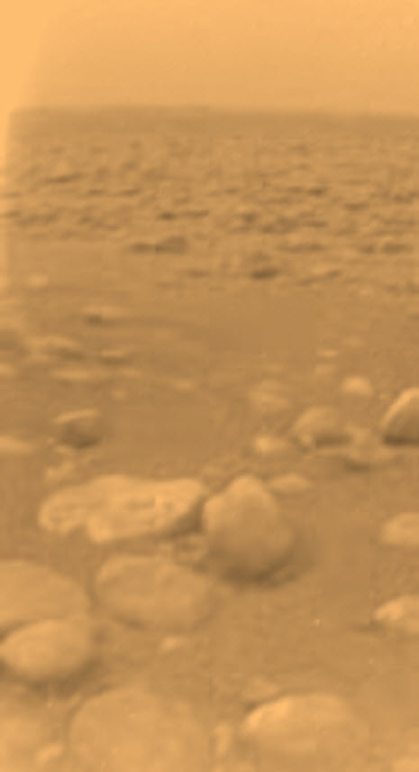
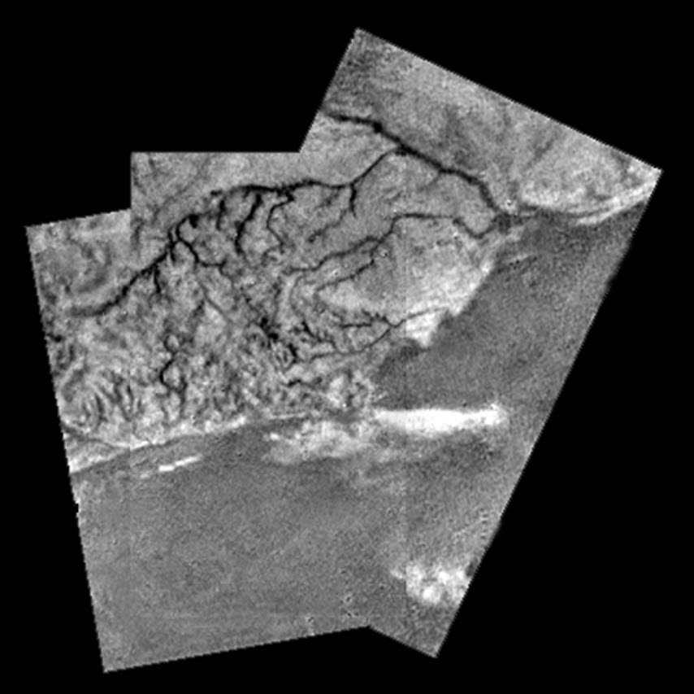
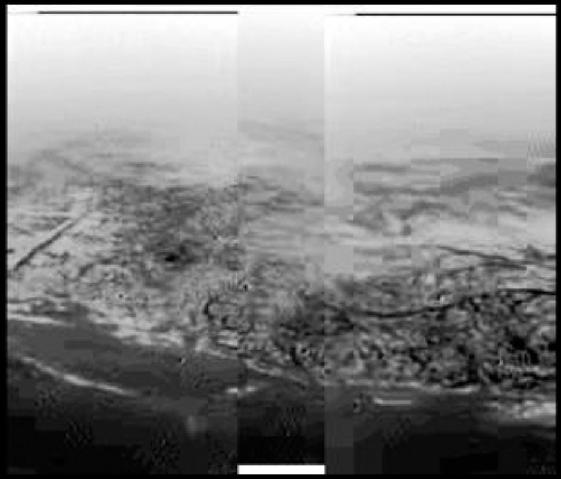

Could there be extraterrestrials on Titan? Or could remote viewers for the CIA observe some events in the distant future? Who knows. One thing is certain, Titan is an interesting place, and the idea that there might be a facility there is something to investigate. Even if it is seemingly unlikely.
I stumbled upon a CIA remote viewing report some time ago. It tickled my interests and I just now got a chance to sit down and ponder about it.
A quick review of Titan
Titan is an interesting moon. Saturn’s largest moon Titan is an extraordinary and exceptional world. Titan has a radius of about 1,600 miles (2,575 kilometers), and is nearly 50 percent wider than Earth’s moon. Among our solar system’s more than 150 known moons, Titan is the only one with a substantial atmosphere. And of all the places in the solar system, Titan is the only place besides Earth known to have liquids in the form of rivers, lakes and seas on its surface.
But it is a dim place.
Titan is about 759,000 miles (1.2 million kilometers) from Saturn, which itself is about 886 million miles (1.4 billion kilometers) from the Sun, or about 9.5 astronomical units (AU). One AU is the distance from Earth to the Sun. Light from the Sun takes about 80 minutes to reach Titan; because of the distance, sunlight is about 100 times fainter at Saturn and Titan than at Earth.
Titan, is an icy world whose surface is completely obscured by a golden hazy atmosphere. Titan is larger than the planet Mercury and is the second largest moon in our solar system. Jupiter’s moon Ganymede is just a little bit larger (by about 2 percent).
Titan’s atmosphere is made mostly of nitrogen, like Earth’s, but with a surface pressure 50 percent higher than Earth’s. Titan has clouds, rain, rivers, lakes and seas of liquid hydrocarbons like methane and ethane.
High in Titan’s atmosphere, methane and nitrogen molecules are split apart by the Sun’s ultraviolet light and by high-energy particles accelerated in Saturn’s magnetic field. The pieces of these molecules recombine to form a variety of organic chemicals (substances that contain carbon and hydrogen), and often include nitrogen, oxygen and other elements important to life on Earth.

Some of the compounds produced by that splitting and recycling of methane and nitrogen create a kind of smog—a thick, orange-colored haze that makes the moon’s surface difficult to view from space. (Spacecraft and telescopes can, however, see through the haze at certain wavelengths of light outside of those visible to human eyes.) Some of the heavy, carbon-rich compounds settle to the moon’s surface—these hydrocarbons play the role of “sand” in Titan’s vast dune fields. And methane condenses into clouds that occasionally drench the surface in methane storms.
Experiments led by researchers at the Georgia Institute of Technology suggest the particles that cover the surface of Saturn’s largest moon, Titan, are “electrically charged.” When the wind blows hard enough (approximately 15 mph), Titan’s non-silicate granules get kicked up and start to hop in a motion referred to as saltation. As they collide, they become frictionally charged, like a balloon rubbing against your hair, and clump together in a way not observed for sand dune grains on Earth — they become resistant to further motion. They maintain that charge for days or months at a time and attach to other hydrocarbon substances, much like packing peanuts used in shipping boxes here on Earth. The findings have just been published in the journal Nature Geoscience. “If you grabbed piles of grains and built a sand castle on Titan, it would perhaps stay together for weeks due to their electrostatic properties,” said Josef Dufek, the Georgia Tech professor who co-led the study. “Any spacecraft that lands in regions of granular material on Titan is going to have a tough time staying clean. Think of putting a cat in a box of packing peanuts.” The electrification findings may help explain an odd phenomenon. Prevailing winds on Titan blow from east to west across the moon’s surface, but sandy dunes nearly 300 feet tall seem to form in the opposite direction. “These electrostatic forces increase frictional thresholds,” said Josh Méndez Harper, a Georgia Tech geophysics and electrical engineering doctoral student who is the paper’s lead author. “This makes the grains so sticky and cohesive that only heavy winds can move them. The prevailing winds aren’t strong enough to shape the dunes.” -The electric sands of Titan
The largest seas are hundreds of feet deep and hundreds of miles wide.
Beneath Titan’s thick crust of water ice is more liquid—an ocean primarily of water rather than methane. Titan’s subsurface water could be a place to harbor life as we know it, while its surface lakes and seas of liquid hydrocarbons could conceivably harbor life that uses different chemistry than we’re used to—that is, life as we don’t yet know it. But because we really do not know much about this place, Titan could also just as well be a lifeless world.
As exotic as Titan might sound, in some ways it’s one of the most hospitable worlds in the solar system. Titan’s nitrogen atmosphere is so dense that a human wouldn’t need a pressure suit to walk around on the surface. At the surface of Titan, the atmospheric pressure is about 60 percent greater than on Earth—roughly the same pressure a person would feel swimming about 50 feet (15 meters) below the surface in the ocean on Earth.

Because Titan is less massive than Earth, its gravity doesn’t hold onto its gaseous envelope as tightly, so the atmosphere extends to an altitude 10 times higher than Earth’s—nearly 370 miles (600 kilometers) into space. The the atmosphere is quite large, larger than earths.
And the gravity is light, much lighter. Meaning that you could hop and jump for great distances. Walking would be like walking on a trampoline. Which might be pretty cool. Well, at least initially.

But, you know, you all would, however, need an oxygen mask and protection against the cold—temperatures at Titan’s surface are around minus 290 degrees Fahrenheit (minus 179 Celsius). It makes Siberia look like a tropical oasis. But, what this means is that the spacesuit could be light, and thin. With only a interior heater that would keep your snug and warm against the cold outside.
Indeed, the surface of Titan is one of the most Earth-like places in the solar system, albeit at vastly colder temperatures and with different chemistry. Here it is so cold (-290 degrees Fahrenheit or -179 degrees Celsius) that water ice plays the role of rock.
There is no free standing water at all. The moment you take a bottle of water outside of the hut, it freezes instantly into the hardest ice imaginable.
Titan may have volcanic activity as well, but with liquid water “lava” instead of molten rock. Titan’s surface is sculpted by flowing methane and ethane, which carves river channels and fills great lakes with liquid natural gas. No other world in the solar system, aside from Earth, has that kind of liquid activity on its surface.

Titan’s dense atmosphere, as well as gravity roughly equivalent to Earth’s Moon, mean that a raindrop falling through Titan’s sky would fall more slowly than on Earth. While Earth rain falls at about 20 miles per hour (9.2 meters per second), scientists have calculated that rain on Titan falls at about 3.5 miles per hour (1.6 meters per second), or about six times more slowly than Earth’s rain.
A rain shower on Titan would be a slow slog of relaxing pitter-patter.
Titan’s raindrops can also be pretty large. The maximum diameter of Earth raindrops is about 0.25 inches (6.5 millimeters) while raindrops on Titan can reach diameters of 0.37 inches (9.5 millimeters), or about 50 percent larger than an Earth raindrop.
Or maybe more like a slog slog of thump-whump.
Vast regions of dark dunes stretch across Titan’s landscape, primarily around the equatorial regions. The “sand” in these dunes is composed of dark hydrocarbon grains thought to look something like coffee grounds. And as I have stated above, are electrostaticly charged to behave like “Styrofoam peanuts”. It might be a real task cleaning off your suit when you come inside.

In appearance, the tall, linear dunes are not unlike those seen in the desert of Namibia in Africa. Titan has few visible impact craters, meaning its surface must be relatively young and some combination of processes erases evidence of impacts over time. Earth is similar in that respect as well; craters on our planet are erased by the relentless forces of flowing liquid (water, in Earth’s case), wind, and the recycling of the crust via plate tectonics. These forces are present on Titan as well, in modified forms. In particular, tectonic forces—the movement of the ground due to pressures from beneath—appear to be at work on the icy moon, although scientists do not see evidence of plates like on Earth.
Titan takes 15 days and 22 hours to complete a full orbit of Saturn. Titan is also tidally locked in synchronous rotation with Saturn, meaning that, like Earth’s Moon, Titan always shows the same face to the planet as it orbits.
Saturn takes about 29 Earth years to orbit the Sun (a Saturnian year), and Saturn’s axis of rotation is tilted like Earth’s, resulting in seasons. But Saturn’s longer year produces seasons that each last more than seven Earth years. Since Titan orbits roughly along Saturn’s equatorial plane, and Titan’s tilt relative to the sun is about the same as Saturn’s, Titan’s seasons are on the same schedule as Saturn’s—seasons that last more than seven Earth years, and a year that lasts 29 Earth years.

The Cassini spacecraft’s numerous gravity measurements of Titan revealed that the moon is hiding an underground ocean of liquid water (likely mixed with salts and ammonia). The European Space Agency’s Huygens probe also measured radio signals during its descent to the surface, in 2005, that strongly suggested the presence of an ocean 35 to 50 miles (55 to 80 kilometers) below the icy ground.
The discovery of a global ocean of liquid water adds Titan to the handful of worlds in our solar system that could potentially contain habitable environments. Additionally, Titan’s rivers, lakes and seas of liquid methane and ethane might serve as a habitable environment on the moon’s surface, though any life there would likely be very different from Earth’s life. Thus, Titan could potentially harbor environments with conditions suitable for life—meaning both life as we know it (in the subsurface ocean) and life as we don’t know it (in the hydrocarbon liquid on the surface).

All in all, I would say that Titan would not only be an absolutely fascinating place to visit, but it would be a beautiful one as well. With Saturn rises, settings, seasons, clouds, and unique geography. Not to mention the glimmering rings that would hover above you in the smoggy skies above.
The enormous dense atmosphere, with the low gravity, could make individual personal flying a reality. With only the smallest amount of propulsive jet-pack and “wings” necessary. While it would be risky; a tear in your suit due to a tumble or fall could be lethal, it would be extraordinary.
Couple that with sailing on the seas of Titan, or swimming (wearing a spacesuit of course) would be a truly unique and adventuresome experience.
What is remote viewing.
Well, Titan is a very cool place and it would be both beautiful and interesting. So… then, why is the CIA investigating it, and what is the technique that they are using?
Remote viewing is defined as the ability to acquire accurate information about a distant or non-local place, person or event without using your physical senses or any other obvious means. It’s associated with the idea of clairvoyance, seemingly being able to spontaneously know something without actually knowing how you got the information. It is also sometimes called “anomalous cognition” or “second sight.”
Many of us experience this from time to time as an intuitive flash of insight that turns out to be correct. Many well-known entrepreneurs and business people, like George Soros, Conrad Hilton, Thomas Alva Edison and Akio Morita, the co-founder of Sony, have attributed their business success to this ability. And we’ve all seen natural psychics perform seemingly amazing feats of mental skill on TV.
The difference between natural psychic receptivity and remote viewing is that the latter is a trained skill, a controlled process, that the average person can learn to do, to some degree or another.
Why the CIA used remote viewing
The CIA in conjunction with Stanford University operated a program known as STARGATE to investigate ‘paranormal’ abilities and phenomena that some humans are capable of, and perhaps all of us are capable of.
One of the programs under the STARGATE umbrella was the remote viewing program.
As stated above, “remote viewing” is the ability to describe a remote location, regardless of distance and ones proximity to the target, from a given location independent of the target. So basically, if you had this ability you could accurately “see” what’s on the back side of the Moon, if anything, or you could see what’s inside a specific building in another country if you were given the coordinates.
The CIA has viewed this technique as a valuable sensing mechanism / tool ever since they had obtained demonstratively consistent results guaranteeing it’s effectiveness.
To summarize, over the years, the back-and-forth criticism of protocols, refinement of methods, and successful replication of this type of remote viewing in independent laboratories has yielded considerable scientific evidence for the reality of the (remote viewing) phenomenon. Adding to the strength of these results was the discovery that a growing number of individuals could be found to demonstrate high-quality remote viewing, often to their own surprise…The development of this capability at SRI has evolved to the point where visiting CIA personnel with no previous exposure to such concepts have performed well under controlled laboratory conditions. -Collective Evolution
A CIA remote-viewing exercise
In November 1986, a remote viewing subject who was sent to Saturn’s moon Titan reported seeing a base on Titan’s surface.
Entering the base, the remote viewer found to her astonishment that all the operators were identical to human beings.
She observed two young, healthy human males working at a control panel supervised by an attractive female.
That’s it?
Yea. It’s a fine tantalizing nugget for certain.
What I can say (from my MAJestic experience) that there are extraterrestrial species that really resemble Earth humans in physical appearance. In general, we find them to be handsome / beautiful overall. They are our height, have the same physical proportions as we do and tend to (not always though) wear clothing. They differ from us in some internal ways, in organs and some biological behaviors.
Now, the thing about this remote viewing session is that we do not know WHEN the target viewing occurred. The Remote Viewer could well describe viewing an event that will happen two hundred years in the future, and those individuals are Earth-born humans.
Certainly in 1986 there was a lot of MAJestic activity. And other agencies were often pulled into supplying supporting help tangentially without their knowledge as to why.
In general, I tend to believe that this is a contemporaneous viewing. As almost all of the MAJestic activity at that time was contemporaneous. This was most certainly true about MAJestic, and there is no reason to believe that a supporting other inter-agency group (like the CIA, for instance) would deviate from that criteria.
I can also confirm that I was active in 1986 within MAJestic, though I was still in training at that time. And while my information was “on a need to know basis only”, we (Sebastian and myself) were able to observe other people from other agencies visiting the China Lake NWC facilities from time to time, and going into our restricted access areas. What they were doing, we never found out.
In general
In general, there was always a purpose or a goal that the programs (that we participated in) had. Knowing this, we must also extrapolate that there was a reason, some kind of reason, why the CIA would remote view Titan.
Keep in mind that for many, many years, titan was only considered a little speck of light in the pictures obtained from Earth-bound telescopes. No one knew anything at all about it. For many, it was just another typical moon.
The first spacecraft to explore Titan, Pioneer 11, flew through the Saturn system on Sept. 1, 1979. Astronomers on Earth had previously studied Titan’s temperature, and calculated its mass, and Pioneer 11 confirmed those characteristics. Because of Titan’s extended and opaque atmosphere, scientists at the time thought (incorrectly, it turns out) that Titan might be the largest moon in the solar system. Pioneer 11 also saw hints of a bluish haze in Titan’s upper atmosphere, which scientists predicted the Voyager spacecraft would be able to see.
The first close up views of Titan other than as a speck of light came with the Voyager 1 flyby.
Its flyby of the Saturn system in November 1979 was as spectacular as its previous encounter. Voyager 1 found five new moons, a ring system consisting of thousands of bands, wedge-shaped transient clouds of tiny particles in the B-ring that scientists called “spokes,” a new ring (the G-ring), and “shepherding” satellites on either side of the F-ring -- satellites that keep the rings well-defined. During its flyby, the spacecraft photographed Saturn’s moons Titan, Mimas, Enceladus, Tethys, Dione, and Rhea. Based on incoming data, all the moons appeared to be composed largely of water ice. Perhaps the most interesting target was Titan, which Voyager 1 passed at 05:41 UT Nov. 12, 1979, at a range of about 2,500 miles (4,000 kilometers). Images showed a thick atmosphere that completely hid the surface. The spacecraft found that the moon’s atmosphere was composed of 90% nitrogen. Pressure and temperature at the surface was 1.6 atmospheres and minus 292 degrees Fahrenheit (minus 180 degrees Celsius), respectively. Atmospheric data suggested that Titan might be the first body in the solar system, apart from Earth, where liquid might exist on the surface. In addition, the presence of nitrogen, methane, and more complex hydrocarbons indicated that prebiotic chemical reactions might be possible on Titan. -NASA
Naturally, this information helped direct the follow-up mission with Voyager 2.
When the Voyager 1 and 2 spacecraft passed through the Saturn system in 1980 and 1981, they couldn’t see Titan’s surface because of its hazy atmosphere—images from that mission showed a featureless orange world—but they did see the blue haze as a seemingly detached layer of Titan’s upper atmosphere. Just before Voyager 1 arrived in the Saturn system, some scientists speculated that the moon’s cold temperatures and methane meant that Titan might be home to oceans of liquid hydrocarbons. But the Voyager spacecrafts’ cameras were unable to penetrate Titan’s opaque atmosphere to get a clear view of the surface. Voyager did, however, reveal that Titan had traces of acetylene, ethane, and propane, along with other organic molecules, and that its atmosphere was primarily nitrogen. -NASA
In 1994, NASA’s Hubble Space Telescope recorded pictures of Titan using particular colors of infrared light that could pierce through the haze. The Hubble images showed large bright and dark areas, including bright region the size of Australia. The Hubble results didn’t prove that liquid seas existed, though, and the mystery about what was hidden below Titan’s haze remained until 2004.
The Cassini spacecraft, with the European Space Agency’s Huygens probe attached, became the first human-made object to orbit Saturn in 2004. Almost immediately, Cassini began observing Titan, peering through the haze for the first time.
The Huygens probe detached from Cassini and parachuted through Titan’s atmosphere, landing on the surface on Jan. 14, 2005—the first landing of a probe in the outer solar system.
Huygens collected images and atmospheric data during its descent as well as from the surface, and transmitted that data to Cassini, which relayed the data to Earth.
Cassini performed 127 close flybys of Titan over 13 years, using a suite of tools, including radar and infrared instruments to peer through Titan’s haze and finally give scientists a detailed view of the moon’s surface and complex atmosphere. Cassini-Huygens discovered that Titan has clouds, rain, lakes and rivers of liquid hydrocarbons, as well as a subsurface ocean of salty water.

Meanwhile the Cassini probe orbited the planet and peered through the haze to take detailed pictures.

Other Huygens’ data provide strong evidence for liquids flowing on Titan. However, the fluid involved is methane, a simple organic compound that can exist as a liquid or gas at Titan’s sub-170 degree C temperatures, rather than water as on Earth. Titan’s rivers and lakes appear dry at the moment, but rain may have occurred not long ago.
Additionally, the probe took pictures as it descended to the planet (ok, well, moon) surface. These pictures are all very interesting. Here is one such picture…

Investigating this further…
The decision to remote view Titan occurred in 1986. This was directly after the Hubble Space Telescope took pictures of the moon. If you recall, all that anyone knew about Titan was that there were areas of light and dark under the haze of Titan. Perhaps the team wanted to see if there were any entities under this cloud cover involved in the apparent seasonal changes.
Perhaps.
Or, perhaps this “dove-tails” with other remote viewing efforts also conducted prior to it.
What we do know is that after this viewing (and other viewings that are still classified) that…
The CIA Remote Viewed the “Galactic Federation” presence on the Earth.
One of the CIA’s declassified remote viewing sessions conducted in 1988 targeted the Earth headquarters for the Galactic Federation. (see remote viewing notes here) It’s unclear who the remote viewer is. (Names are usually listed.)
First of all, where would the CIA get the idea to even look for some sort of galactic federation? This implies either joint-efforts alongside MAJestic, or independently obtained information suggestive of this.
- Remote viewer Lyn Buchanan describes the four general classification-types of extraterrestrials:
“After the military I was asked by a branch of the government to do a…study paper to compare and contrast ET psychic ability to human psychic ability. …I was given access to many of the things that never made it into Project Grudge or the Blue Book or anything like that because they couldn’t be denied. …I found out that we can take the ET’s of all different kinds and species and all that and put them into four main categories. We’ve got those who are more psychic than us and those that are less psychic than us. In each of those two categories we’ve got friendly to us and unfriendly to us, the unfriendly non-psychic ones tend to not come here. They don’t like us, they don’t want to be around us. The non-psychic friendly ones come here for trade. The psychic friendly ones actually want to help us develop our abilities and become stronger at it. And the unfriendly psychic ones want us wiped off the planet, they want us dead, period, no questions asked.”
To which I say; “Duh!”
Yeah. Dogs are big and small. Some have long hair and some have short hair. Interesting, but not really (at all) of significance on a practical basis.
- Remote viewers Ingo Swann, Pat Price and Joseph McMoneagle also claimed to have remote viewed extraterrestrials and ET bases on Earth, with extreme accuracy.
Buchanan said that there are five extraterrestrial bases on Earth, all inside of mountains. Some of these bases have humans working with these extraterrestrials in various ways.
- According to Captain Frederick H. Atwater, a retired US Army officer who was involved in remote viewing experiments for [1] the Army’s Intelligence and Security Command, [2] the Defense Intelligence Agency and [3] the CIA, Pat Price remotely viewed four alien bases on Earth, one of which was located under Mount Ziel, in the Northern Territory (Australia), some 80 miles west-northwest of Pine Gap.
Price believed the base contained a mixture of ‘personnel’ from the other bases, one purpose being to ‘transport new recruits, with an overall monitoring function’. The other bases were said to be under Mount Perdido in the Pyrenees (Spain), Mount Inyangani in Zimbabwe, and in Alaska under Mount Hayes. Price described the occupants as ‘looking like homo sapiens, except for the lungs, heart, blood and eyes.’
And so with this, we enter into the realm of Internet-extraterrestrial-lore…
Conclusion
For undisclosed reasons, the CIA remote-viewed the Saturn moon Titan. They say humans or a species similar to humans working within a base or facility there. Not much of interest can be determined from the event aside than the base appears to be isolated and alone. There isn’t a large city or community there, apparently.
After the viewing the CIA conducted a series of remote viewing sessions to “map out” the extraterrestrial presence on the earth. Of which they determined consisted of five “bases” all underground, and all under mountains.
When you read reports like this our minds tend to go into “over drive” to figure things out and wonder what is going on. Those with a military bent might consider that the extraterrestrials are here to take over the planet. While others with different ideology might have completely different views.
But I will not allow that here.
Instead, I will selectively provide this nugget…
Haim Eshed, former head of Israel’s Defense Ministry’s space directorate, former General and respected professor claimed that the U.S. & Israel have been in contact with intelligent extraterrestrials for quite a long time. He specifically referenced the “Galactic Federation” emphasizing how they are waiting for humanity to evolve, and that we are not quite ready for contact.
To which I must say… YES.
The earth is a sentience nursery, and we will never be permitted to egress from it until we get our collective shit together, sort out the kind of sentience that we want to have, and chill out by discarding the selfish, and disastrous from our societies. If we do not, then they will all consume us and we will see a caste system completed on a global basis.
Yikes!